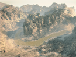
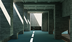
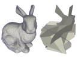
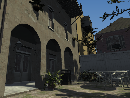
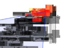
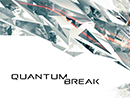

|
|
Publications
|  |
Ari Silvennoinen and Peter-Pike Sloan
Moving Basis Decomposition for Precomputed Light Transport. Computer Graphics Forum 40(4), (EGSR 2021) Best Paper Award [PDF] |
|
Dario Seyb, Peter-Pike Sloan, Ari Silvennoinen, Michal Iwanicki and Wojciech Jarosz.
The Design and Evolution of the UberBake light baking system. ACM Transactions on Graphics 39(4), (SIGGRAPH 2020) [PDF] [Project page] |
|
Ari Silvennoinen and Peter-Pike Sloan.
Ray Guiding for Production Lightmap Baking. SIGGRAPH Asia Technical Briefs 2019 [PDF] [Slides (PowerPoint)] |
|
Peter-Pike Sloan and Ari Silvennoinen.
Lightmap Encoding Insights. SIGGRAPH Asia Technical Briefs 2018 [PDF] |
|  |
Ari Silvennoinen and Jaakko Lehtinen.
Real-time Global Illumination by Precomputed Local Reconstruction from Sparse Radiance Probes. ACM Transaction on Graphics 36(6), (SIGGRAPH Asia 2017) [PDF] [YouTube video] [Project page] |
|  |
Ari Silvennoinen, Hannu Saransaari, Samuli Laine and Jaakko Lehtinen.
Occluder Simplification using Planar Sections. Computer Graphics Forum 33(1), 2014 [PDF] [Video] [Project page] |
|  |
Oliver Mattausch, Jiri Bittner, Ari Silvennoinen Daniel Scherzer and Michael Wimmer.
Efficient Online Visibility for Shadow Maps. Article published in book GPU Pro 3, A K Peters/CRC Press 2012 [Project page] |
|  |
Jiri Bittner, Oliver Mattausch, Ari Silvennoinen and Michael Wimmer.
Shadow Caster Culling for Efficient Shadow Mapping. ACM SIGGRAPH Symposium on Interactive 3D Graphics and Games 2011 [PDF] [Video] [Project page] |
|
Ari Silvennoinen.
Chasing Shadows. Game Developer Magazine February 2012. [PDF] |
|
Ari Silvennoinen.
A Hybrid Algorithm for Environment Illumination Rendering. Master's Thesis, University of Helsinki December 2007. [PDF] [Slides] |
Conference Talks
|
Ari Silvennoinen
Large-Scale Global Illumination at Activision. Advances in Real-Time Rendering in 3D Graphics and Computer Games, ACM SIGGRAPH 2021 Courses. [Slides] [Course page] |
|
Peter-Pike Sloan, Ari Silvennoinen
Precomputed Lighting Advances in Call of Duty: Modern Warfare. Advances in Real-Time Rendering in 3D Graphics and Computer Games, ACM SIGGRAPH 2020 Courses. [Slides] [Course page] |
|  |
Ari Silvennoinen, Ville Timonen.
Multi-Scale Global Illumination in Quantum Break. Advances in Real-Time Rendering in 3D Graphics and Computer Games, ACM SIGGRAPH 2015 Courses. [PDF with notes] [Course page] |
 |
Ari Silvennoinen, Hannu Saransaari, Samuli Laine and Jaakko Lehtinen.
Occluder Simplification using Planar Sections. Eurographics Symposium on Rendering 2015 (Invited CGF Paper). [PDF] [PDF with notes] [Project page] |
|
Hao Chen, Ari Silvennoinen and Natalya Tatarchuk.
Making Game Worlds from Polygon Soup. Advances in Real-Time Rendering in 3D Graphics and Computer Games, ACM SIGGRAPH 2011 Courses. [Slides] [Course page] |
|
Ari Silvennoinen.
Occlusion Culling in Alan Wake. Hiding Complexity, ACM SIGGRAPH 2011 Talks. [Slides] |
|
Ari Silvennoinen.
Efficient Shadow Mapping. Microsoft GameFest London/Seattle 2011. [Slides] |
Game Credits
|
Call of Duty: Vanguard
Sledgehammer Games, Activision Publishing, Inc. (2021) . PC, Xbox One, Xbox Series X/S, PS4, PS5 |
|
Call of Duty: Black Ops Cold War
Treyarch, Activision Publishing, Inc. (2020) . PC, Xbox One, Xbox Series X/S, PS4, PS5 |
|
Call of Duty: Warzone
Infinity Ward, Activision Publishing, Inc. (2020) . PC, Xbox One, PS4 |
|
Call of Duty: Modern Warfare
Infinity Ward, Activision Publishing, Inc. (2019) . PC, Xbox One, PS4 |
|
Control
Remedy Entertainment (2019) . PC, Xbox One, PS4 |
|
Call of Duty: Black Ops 4
Treyarch, Activision Publishing, Inc. (2018) . PC, Xbox One, PS4 |
 |
Quantum Break
Remedy Entertainment (2016) . PC, Xbox One |
 |
Destiny
Bungie, Activision Publishing, Inc. (2014) . Xbox 360, Xbox One, PS3, PS4 |
|
Alan Wake
Remedy Entertainment (2010) . Xbox 360, PC |